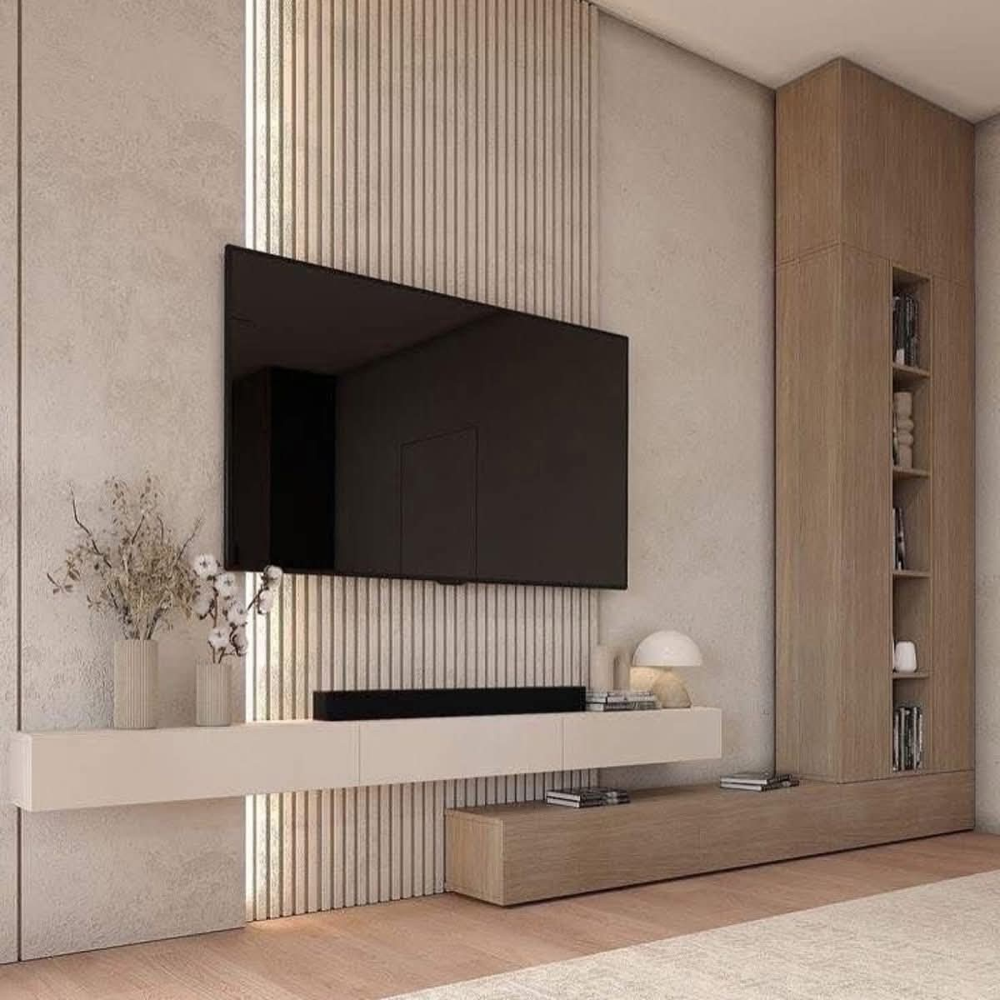

Geometría espacial
Diseñamos con intención: cada línea, cada sombra y cada textura responde a una lógica técnica y emocional. En Vi Concept Studio, la arquitectura es narrativa, precisión y legado.
- Materialidad: Selección consciente que comunica identidad.
- Iluminación: Técnica y narrativa, integrada desde el concepto.
- Composición: Equilibrio entre geometría, flujo y uso.
Inspiración visual

Texturas que definen identidad y propósito.

Luz como herramienta de expresión espacial.

Geometría aplicada para lograr armonía funcional.